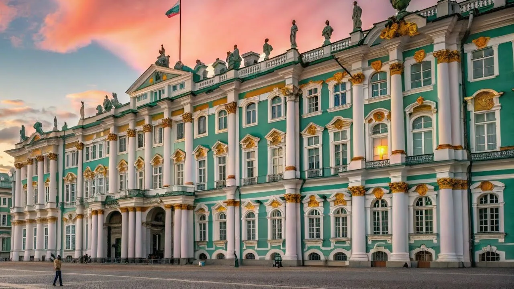
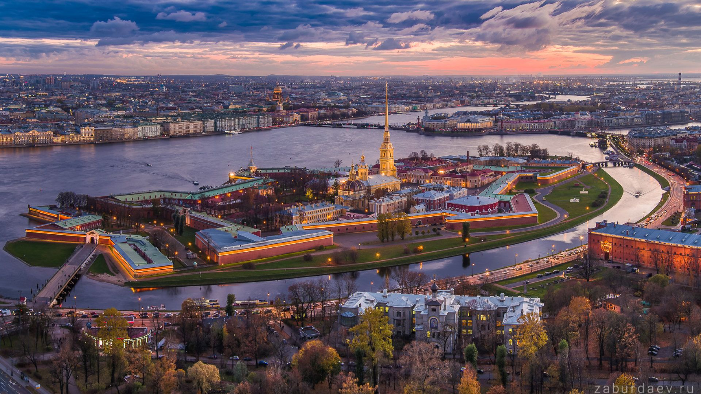
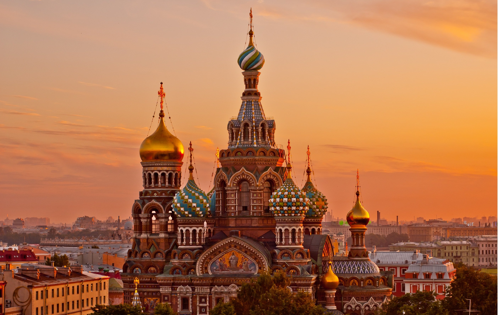
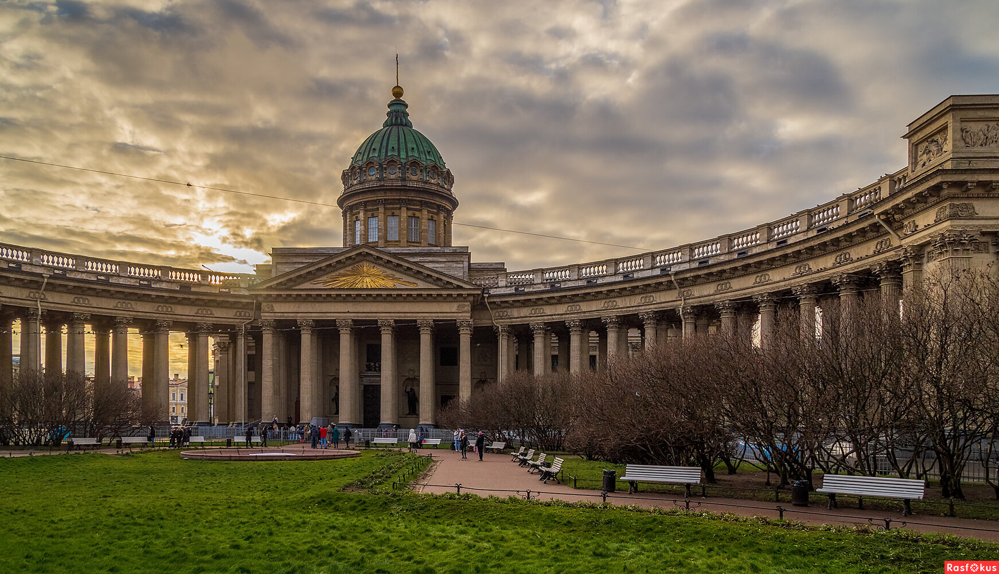
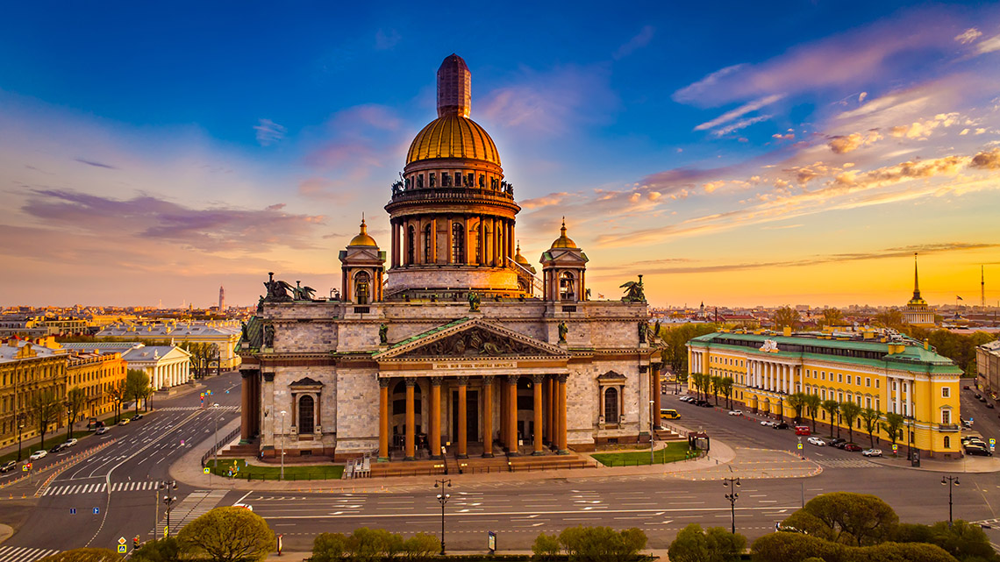
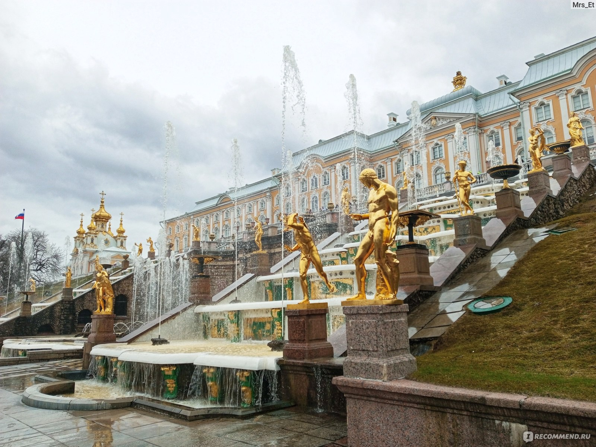

Ваш идеальный Питер
Выбираем главное из впечатлений

Санкт-Петербург

От Невы до малых каналов: исследуем Северную Венецию
Выбираем главное из впечатлений
Откройте сердце впечатлениям

Это путешествие сквозь эпохи, где величественные залы Зимнего дворца хранят миллионы шедевров, а каждый экспонат раскрывает удивительную историю мирового искусства. Роскошные интерьеры и богатейшие коллекции от античности до современности делают музей настоящей сокровищницей, ради которой стоит приехать в Петербург. Здесь легко потеряться во времени, открывая для себя полотна великих мастеров и погружаясь в атмосферу императорской эпохи.

Сердце Петербурга и точка отсчёта его истории: строгие бастионы и золотой шпиль собора хранят память о великих свершениях и судьбоносных решениях. Прогулка по её территории переносит сквозь века — от петровской эпохи до революционных потрясений, открывая тайны, спрятанные за гранитными стенами. Здесь каждый камень дышит прошлым, а вид на Неву напоминает о том, с чего начинался город.

Яркий символ Петербурга, чьи нарядные купола и мозаичные узоры словно переносят в сказочный мир русского зодчества. Внутри храма раскрывается настоящее чудо — более 7 000 квадратных метров мозаики, превращающих каждый зал в уникальную галерею образов. Это не просто памятник, а живая история, в которой переплетаются трагедия, память и невероятная красота.

Величественный символ Петербурга, чья изящная колоннада словно обнимает Невский проспект, открывая городу своё архитектурное совершенство. Внутри раскрывается особая гармония: сдержанная роскошь мрамора, торжественные своды и свет, льющийся сквозь высокие окна, создают пространство, где ощущается и история, и покой. Это не просто храм, а живая летопись эпохи — от замысла Воронихина до памяти о подвигах 1812 года.

Грандиозный символ Петербурга, чьи монументальные колонны и сияющий купол стали неотъемлемой частью городского силуэта. Внутри раскрывается настоящий музей цветного камня: мрамор, малахит и порфир создают неповторимую роскошь, а росписи Брюллова завораживают масштабом и глубиной. Поднявшись на колоннаду, вы увидите город с высоты птичьего полёта — и поймёте, почему этот собор называют сердцем имперского Петербурга.

Императорская сказка, воплощённая в камне и воде: величественные дворцы и изумрудные парки обрамляют знаменитую феерию фонтанов, поражающую своим размахом. Здесь каждая аллея хранит дыхание истории, а Большой каскад с «Самсоном» становится сердцем ансамбля, рассказывая о победах и амбициях петровской эпохи. Прогулка по Петергофу — это путешествие сквозь века, где роскошь имперских резиденций сплетается с тихой красотой прибрежных пейзажей Финского залива.